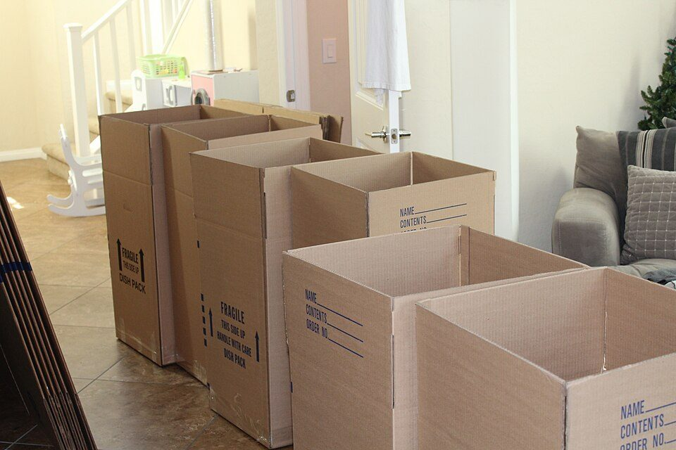
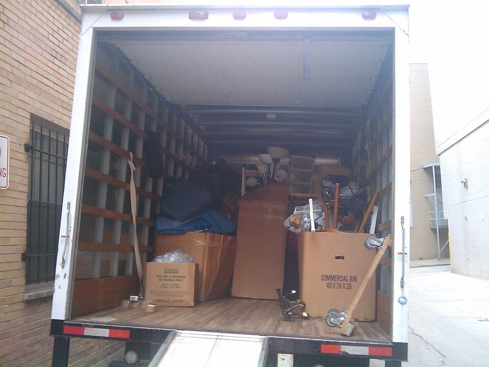

トップ › 暮らし・健康
引っ越し費用を抑える方法と、春の繁忙期の相場のイメージ（2027年春）
要点まとめ
- 近距離の単身は、通常期約4〜6万円、繁忙期約5〜8万円（民間の目安）[1][2]
- 3月の引っ越しは通常の月の約2倍。中旬〜4月上旬が最も混む[3]
- 安くするには、3月中旬〜4月上旬と土日祝を外し、複数社の見積書を比べる[4]
- キャンセル料は3日前までなら原則なし。前々日以降は上限20〜50%[5]
- エアコン・テレビ・冷蔵庫・洗濯機は粗大ごみに出せない。前日までに処分[6][3]

引っ越しの荷物を詰めた段ボール（イメージ）
2027年の春に引っ越す人向けに、繁忙期の混み方、料金の目安、費用を抑える方法、手続きの順番をまとめました。2027年春向けの国の呼びかけや混雑予想は、2026年11月5日時点ではまだ出ていないため、2026年春の資料をもとにしています。料金の相場は国の統計がなく、民間の集計を目安として使っています。粗大ごみの出し方や役所の手続きの日数は、大阪市の案内を例にしています。特定の業者をすすめるものではありません。
春はどれくらい混むか
3月の件数は通常の月の約2倍
依頼は3〜4月に集中し、3月中旬〜4月上旬が最も混む[3]
大手引越事業者6社の月別の件数（2024年度） （万件。国交省のグラフから筆者が読み取った概数。棒が長い月ほど件数が多く、3月だけ色を変えている）[3][7]
4月約21.7
5月約14.9
6月約15.2
7月約15.0
8月約13.4
9月約13.9
10月約13.8
11月約12.6
12月約14.1
1月約11.7
2月約15.2
3月約26.8
つまり、3月は予約が取りにくく、国が「時期をずらして」と呼びかけるほど混む月です[3][8]。
くわしく
- 元のデータは、全日本トラック協会が大手6社に聞き取った結果[3]
- 2026年は、2月24日時点の予約で3月28日〜4月4日が「非常に混雑」とされた[8]
- 2026年は、4月第2週以降は比較的余裕があるとされた[8]
- 2027年なら、3月27日（土）〜4月4日（日）ごろが同じ時期にあたる（筆者の推測）
- 2026年は、国の呼びかけが1月28日、予約状況の発表が3月13日だった[3][8]
- 2027年向けも同じころに出ると考えられる。国交省のサイトで確かめる（筆者の推測）
料金の目安（民間の集計）
民間の2つの集計で見る目安。金額は「幅」で見る
同じ条件でも集計元によって1.3〜2.3倍違う。幅で見る
引っ越し料金の目安（各欄は「SUUMOの値〜引越し侍の値」。税込か税抜かの記載なし）[1][2]
| 区分 | 通常期 | 繁忙期 |
|---|
| 単身・15km未満 | 約3.9万〜5.5万円 | 約4.6万〜7.8万円 |
|---|
| 2人・15km未満 | 約7.0万〜9.1万円 | 約8.5万〜12.5万円 |
|---|
| 単身・200km未満 | 約5.1万〜7.1万円 | 約6.2万〜14.5万円 |
|---|
| 2人・200km未満 | 約9.3万〜13.0万円 | 約13.2万〜19.9万円 |
|---|
見方: 例えば「約3.9万〜5.5万円」は、SUUMOの集計が約3.9万円、引越し侍の集計が約5.5万円という意味です。同じ条件でもこれだけ違うので、金額は幅で見てください（筆者の見解）。
くわしく
- SUUMOは2〜4月を繁忙期としている。表の単身には「荷物小」の値を使った[1]
- 引越し侍は3〜4月を繁忙期とし、利用者のアンケートから算出している[2]
- 引越し侍の月別では、一人暮らしは3月が約14.5万円、12月が約6.8万円[2]
- つまり同じ一人暮らしでも、月が違うだけで2倍以上の差がある（筆者の計算）
- SUUMOの大阪府（15km未満）は、単身（荷物小）46,525円、2人87,707円[1]
- 国や業界団体による料金の平均の統計は、見つからなかった
見積もりとキャンセルの共通ルール
標準引越運送約款（やっかん）は、国土交通省が示している、引っ越し業者と客の間の共通ルールです。見積書（料金と作業内容を書いた書面）やキャンセル料の決まりは、ここに書かれています[5]。
見積もりは無料。キャンセル料は3日前までなら原則なし
見積もりは原則無料。前払い金（内金・手付金）も不要[5]
キャンセル・延期の手数料の上限（見積書の運賃などに対する割合）[5][9]
| 申し出た日 | 手数料の上限 |
|---|
| 荷物の受取日の3日前まで | かからない |
|---|
| 前々日 | 20%以内 |
|---|
| 前日 | 30%以内 |
|---|
| 当日 | 50%以内 |
|---|
見方: 受取日は、業者が荷物を引き取りに来る日です。例えば見積書の運賃が5万円なら、前々日のキャンセル料は最大1万円、前日なら最大1.5万円です（筆者の計算）。
くわしく
- 業者は受取日の3日前までに、見積書の内容に変わりがないかを客に確認する[5]
- この確認の連絡がなかった場合は、キャンセル料は請求されない[5]
- キャンセルしても、すでに済んだエアコンの取り外しなどの費用は別に請求されうる[5][10]
- 下見の費用は、事前に了解した場合だけかかることがある[5]
- 荷物の傷は、引き渡しから3か月以内に業者へ知らせる。過ぎると業者の責任は消える決まり[5]
業者選びの目安になる「引越安心マーク」
約款を守り苦情窓口を置く業者に、業界団体が与える認定マーク[11]
くわしく
- 全日本トラック協会が認定し、認定した事業者の一覧をサイトで公開している[11]
- 管理者講習を受けた人を、全ての事業所に置くことが条件の1つ[11]
- 一覧にある業者から選ぶのが、業者選びの目安の1つになる（筆者の見解）
費用を抑える方法
まず時期をずらす。次に平日を選ぶ
ピーク（3月中旬〜4月上旬）と土日祝を避けて、平日にする[4][3]
くわしく
- 国交省は、2月以前か5月以降の引っ越しも検討するよう求めている[3]
- 国交省の資料では、時期をずらして「代金が安くなった」という声が紹介されている[3]
- 民間の集計では、平日と土日の料金の平均の差は小さかった[1][2]
- つまり、曜日より時期による差のほうが大きい。まず時期を考える（筆者の見解）
複数社の見積書を比べる
電話やネットの見積もりだけで決めない[4]
くわしく
- 複数の業者から見積書をもらい、料金とサービス内容を比べる[4]
- ネットの見積もりだけで頼み、当日トラックに荷物が積みきれなかった相談例がある[10]
- 荷物の量や搬入経路（階段・エレベーターなど）を正確に伝える。不安なら訪問見積もりを[10]
- エアコンの取り外しなどの追加費用も、見積書に書いてもらう（筆者の見解）
荷物を減らし、荷造りは自分で済ませる
不用品を前日までに処分すると、時間と費用の節約に[3]
くわしく
- 荷造りは原則として利用者がする。業者に頼むと別に費用がかかる[5]
- エアコン、テレビ、冷蔵庫、洗濯機は家電リサイクル法の対象（「家電4品目」）[6]
- 家電4品目は粗大ごみに出せず、リサイクル料金がかかる[6][12]
- 大阪市の例: 市は家電4品目を収集せず、販売店などに引き取りを頼む[13]
- リサイクル料金は、家電リサイクル券センターのサイトでメーカーや型番から調べられる[12]
- 大阪市の粗大ごみは、事前に申し込む有料収集。ネット申込みは24時間受付[14]

荷物を積んだ引っ越しトラックの荷台（イメージ）
荷物が少ないなら、単身パックや宅配便も候補
荷物が少ないなら選択肢になるが、春の割増に注意
単身パックL（日本通運）
専用ボックス単位の定額。30,800円（税込）から。1件3ボックスまで
3月20日〜4月5日は1ボックス8,800円（税込）を加算[15]
ゆうパック（日本郵便）
1個あたり3辺の合計170cm以下・25kgまで
2026年10月1日に平均約10%値上げ[16][17]
宅急便（ヤマト運輸）
営業所やコンビニに持ち込むと1個100円引き
運賃は運賃一覧表で確かめる[18]
くわしく
- 単身パックLは、土日祝の搬入で1ボックス2,200円（税込）を加算[15]
- ゆうパックは、持ち込むと1個120円引き[17]
- 160サイズ（3辺の合計160cm以内）は、近畿内のゆうパックで3,000円（税込）[16]
- 関西内の160サイズは、宅急便で3,020円（税込、現金払い）[18]
- 160サイズ10個で約3万円。単身パックL（30,800円）とほぼ同じ（筆者の計算）
- 単身パックなど定額の箱の運送は約款の対象外のことがあり、キャンセル料の表が合わない場合も[5]
新婚世帯の補助と、転勤の引っ越し費用の扱い
新婚世帯は、自治体の引っ越し費用の補助がある場合も[19]
くわしく
- 国の交付金を使う市町村の制度で、対象は夫婦ともに39歳以下、世帯所得500万円未満など[19]
- 上限は夫婦ともに29歳以下で60万円、それ以外は30万円[19]
- 2026年度から、講座の受講が条件に加わった[19]
- 実施するかは市町村ごとに違う。住む市町村に確かめる[19]
- 会社の転勤で支給される引っ越しの旅費は、通常必要な範囲なら所得税がかからない[20]
賃貸の仲介手数料と退去費用
仲介手数料（不動産会社に払う手数料）には上限がある
借りる人からは、原則家賃0.55か月分（税込）まで[21]
くわしく
- 貸主と借主から受け取る合計は、家賃1か月分の1.1倍（税込）まで[21]
- 借りる人から0.55か月分を超えて受け取れるのは、借りる人が事前に承諾した場合だけ[21]
- 「家賃1か月分」と言われたら、承諾を求められていないか確かめる（筆者の見解）
- 礼金・前家賃・火災保険料の相場を示す公的な資料は、見つからなかった
退去時の原状回復は「入居時の状態に戻す」ではない
普通に使った傷みや古くなった分は、貸主の負担[22][23]
原状回復とは、退去するときに借主が部屋を直して返すことです。ただし、年数がたって古くなった分（経年変化）や、普通に使ってできた傷み（通常損耗）は、借主が直す必要はありません[22][23]。
くわしく
- なくしたり壊したりしていない鍵の交換は、貸主の負担が妥当とされる[23]
- 普通に掃除していれば、専門業者の清掃も貸主の負担が妥当とされる[23]
- 契約書の特約（借主に清掃費などを負わせる約束）は、有効になる条件がある[23]
- 入居時と退去時に、写真を撮って立ち会うことが勧められている[23]
- 敷金（入居時に預けるお金）は、未払いの家賃などを差し引いた残りが返される[22]
手続きのタイムライン
3月下旬〜4月上旬に引っ越す場合の例
見積もりは1〜2か月前から。転入届は引っ越し後14日以内
- 今〜12月
時期をずらせるか、会社の規程、補助を確かめる
2月以前・4月中旬以降も候補に（筆者の見解）[8][19]
- 1〜2か月前
複数社に見積もりを頼む
約款を見せてもらい、エアコン工事などの付帯サービスの費用も見積書に書いてもらう[5]
- 約1か月前
粗大ごみと家電4品目の処分を申し込む
家電4品目は粗大ごみとは別の方法で出す[13]
- 30日前から
転出届（今の市町村を出る届け）をマイナポータルで出す
大阪市の案内では30日前から出せる。転出元の役所に行く必要は原則ない[24][25]
- 約1週間前
郵便局に転居届を出し、電気・ガス・ネットに連絡する
転居届を出すと、旧住所あての郵便が新住所に転送される。登録まで3〜7営業日[26][4]
- 5日前まで
水道の使用中止を届け出る
大阪市水道局の場合[27]
- 前日まで
荷造りと不用品の処分を終える
冷蔵庫の霜取り、洗濯機の水抜きも[4]
- 当日
作業の前後を写真や動画で記録する
荷物の傷のトラブルに備える[10]
- 14日以内
転入届（新しい市町村に住み始めた届け）を出す
引っ越し後14日以内に、窓口でマイナンバーカードを見せる。引っ越し前には出せない[28][25]
くわしく
- 郵便の転送は、届け出た日から1年間で無料[26]
- つまり早く出しすぎると、新居で転送される期間がそのぶん短くなる（筆者の計算）
- 「30日前から」が全国共通かは、今回確認できなかった
トラブルと相談先
相談の半分近くは「荷物の傷の補償」。記録で備える
相談の約45%が、荷物の傷などの補償に関するもの[10]
くわしく
- 2024年度に寄せられた引っ越しの相談は2,345件。3月と4月が多い[10]
- 当日に、説明のなかった追加料金約2万円を払った例がある[10]
- 契約しなかった業者から、先に受け取った段ボールの返送料を求められた例も[10]
- 困ったら、消費者ホットライン188に電話して相談する[10]
- 全日本トラック協会にも、約款に基づいて助言する相談窓口がある[29]
相場は「目安」にとどめる
料金は荷物の量、距離、建物の階数、時期で大きく変わります。民間の集計どうしでも差が大きいので、実際の金額は見積書で確かめてください（筆者の見解）。
今回確認できなかった点
- 2027年春向けの国の呼びかけと混雑予想（2026年11月5日時点で未公表）
- 民間の相場の集計期間と、税込か税抜か
- 関西の市町村で、新婚世帯向けの引っ越し補助を行う自治体の一覧
- 標準引越運送約款の2025年改正の具体的な内容
出典（29件）
閲覧日はいずれも2026年11月5日
- 引越し費用・料金の相場（SUUMO引越し見積もり（リクルート、民間の集計））
- 引っ越し費用の相場はいくら？人数・距離・時期別の料金別解説と安く抑える方法（引越し侍（民間の集計））
- 引越時期の分散に御協力をお願いします！～3月の引越件数は通常月の約2倍！～（2026年1月28日）（国土交通省）
- かしこい引越～上手な引越のために知っておきたいこと～（全日本トラック協会（国土交通省掲載））
- 標準引越運送約款（国土交通省（東北運輸局掲載））
- 家電リサイクル法の概要（環境省）
- 引越時期の分散に向けたお願い（国土交通省）
- 今年春に引越をご予定の皆様へ～予約状況のお知らせ～（2026年3月13日）（国土交通省）
- 「標準引越運送約款」のポイント（2025年版）（全日本トラック協会）
- 引越トラブルにご注意（2026年2月4日）（国民生活センター）
- 引越安心マーク（引越事業者優良認定制度）（全日本トラック協会）
- リサイクル料金の検索（家電製品協会 家電リサイクル券センター）
- 家電リサイクル法対象品目の出し方（大阪市環境局）
- 粗大ごみの収集について（大阪市環境局）
- 引越し単身パックL（NX日本通運）
- ゆうパックおよびゆうパケットの基本運賃などの改定（2026年7月3日）（日本郵便）
- ゆうパック（日本郵便）
- 宅急便運賃一覧表：全国一覧（現金でのお支払い）（ヤマト運輸）
- 地域少子化対策重点推進交付金（令和8年度）概要（こども家庭庁）
- No.2508 給与所得となるもの（国税庁）
- 宅地建物取引業者が宅地又は建物の売買等に関して受けることができる報酬の額（国土交通省告示（大阪府掲載））
- 民法（621条・622条の2）（e-Gov法令検索（デジタル庁））
- 原状回復をめぐるトラブルとガイドライン（再改訂版）（国土交通省）
- 【大阪市外へ引越しされる方】転出届はマイナポータルからお手続きできます！（大阪市東成区）
- 引越し手続オンラインサービス（デジタル庁）
- 転居・転送サービス（日本郵便）
- 水道の使用中止の届出（大阪市水道局）
- 転入届（他市区町村から引越ししてきたとき）（大阪市）
- 輸送サービス相談窓口（全日本トラック協会）
写真・画像の出典（2件）
- 引っ越しの荷物を詰めた段ボール
写真: MoveON moving／Wikimedia Commons（CC BY-SA 4.0）
- 荷物を積んだ引っ越しトラックの荷台
写真: brownpau／Wikimedia Commons（CC BY 2.0）